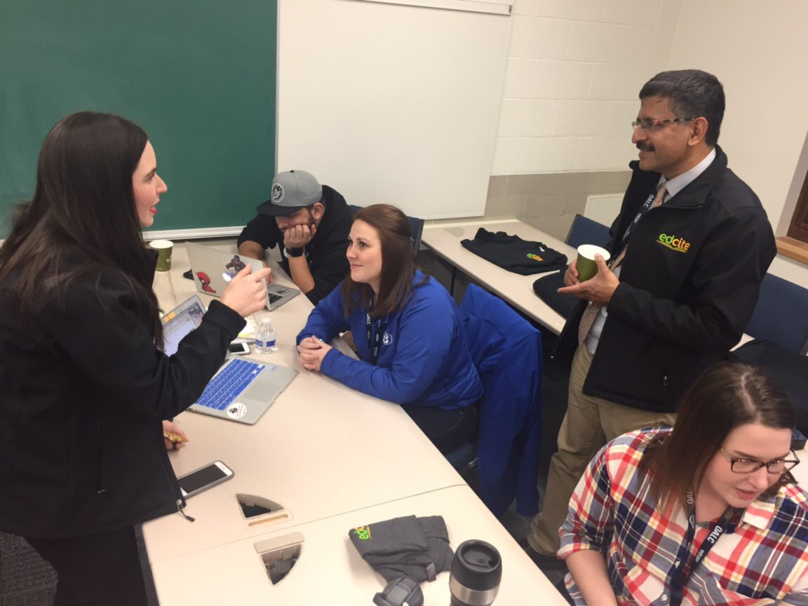

| Home | Leadership | Teaching and Learning | Instructional Design | Multimedia Development | Professional Development | Resume |
|---|
C-4: Technology Coaches conduct needs assessments, develop technology-related professional learning programs, and evaluate the impact on instructional practice, and student learning. C-6: Educational technology facilitators understand the social, ethical, legal, and human issues surrounding the use of technology in PK-12 schools and assist teachers in applying that understanding in their practice. Educational technology facilitators. |
|---|
| Course Artifacts | Field Experience Artifacts |
|---|---|
Pre-Admission Competencies Verification This document rates my use of technology based on the NETS-T as a baseline for starting the program in Instructional Technology. It was an opportunity to evaluate my personal strengths and weaknesses at the beginning og the program to see my progress throughout the master's level coursework. (Course: Introduction to Instructional Technology) |
Ohio Assessment Literacy Conference  The photograph above is from a conference I attended to gain additional strategies for literacy and assessments. We were using EdCite.com in this particular moment and were being informed on the many ways this tech tool can be used to enhance instruction and gather data for instructional purposes. |
Teaching and Technology Philosophy This paper was the cumulation of my personal beliefs regarding the technology standards, TPACK, ethics, 21st century skills, and my philosophy of educational technology. (Course: Introduction to Instructional Technology) |
Hello Literacy Conference 2019 This professional development is presented by Jen Jones. The link above takes you directly to her website with a plethora of information. The picture is from when I attended her conference in February 2019 with some colleagues. We attended to gain additional strategies for teaching reading and sparking a love for reading in students. It was a very motivating conference and I immediately made changes in my classroom the following Monday. The students are loving the changes we have made and I've already noticed a change in their motivation. |
| Home | Leadership | Teaching and Learning | Instructional Design | Multimedia Development | Professional Development | Resume |
|---|
|
|
| Last Revised: March 2019 - ©Elizabeth Rinkes |